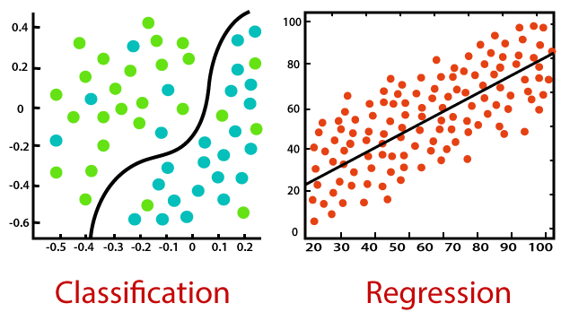

Developed a real-time system to count cell phones and people using YOLOv8 for object detection
and tracking. Trained on custom datasets, the system achieved high precision (0.9095) and recall
(0.8380). Optimized for dynamic environments, it enables efficient monitoring in retail and
security contexts.


Developed a tool that analyzes the sentiment of a given input sentence and determines whether it is positive or negative.
The model is capable of processing both text and emoticons, ensuring more accurate emotional insights.
Developed a waste classification system using the ResNet-50 deep learning model to automatically
sort waste into categories such as glass, metal, paper, plastic, and more.
This system aims to optimize waste sorting processes and improve the accuracy and efficiency of
recycling operations.
Developed an online property rental platform using Python-Django for the backend and HTML, CSS, and JavaScript for the frontend, supported by a MySQL database.

Developed an online platform to manage student job applications, providing a streamlined interface
for students to apply for placements and for recruiters to manage their selection processes.
This project
focuses on analyzing a dataset of student performance scores to gain insights into how
various factors such as gender, race/ethnicity, parental education, and test preparation
influence academic outcomes. The analysis includes exploratory data analysis (EDA), hypothesis
testing, and data visualization to uncover patterns and trends within the data.
I developed a full-stack product management system to display and manage a list of products for LF Diamonds.
The system includes a visually appealing interface with dynamic product cards displaying key
details like model number, pricing, and payment status.

This project applies machine learning techniques to two tasks: predicting housing prices
using the California Housing dataset and classifying wine quality using the Wine Quality
dataset.For regression, Linear Regression and Random Forest models were used to predict median house values.
For classification, Logistic Regression and Decision Tree models classified wine samples based on physicochemical properties.
The project includes data preprocessing, visualization, and performance evaluation.

I developed a CRUD system using Java and SQLite, focusing on managing movie records.
The project allowed users to create a movie database, insert records, retrieve all movies,
and filter them based on the lead actor. I used JDBC to handle database connections and SQL
queries to perform these operations, gaining hands-on experience with database management and
CRUD functionalities.